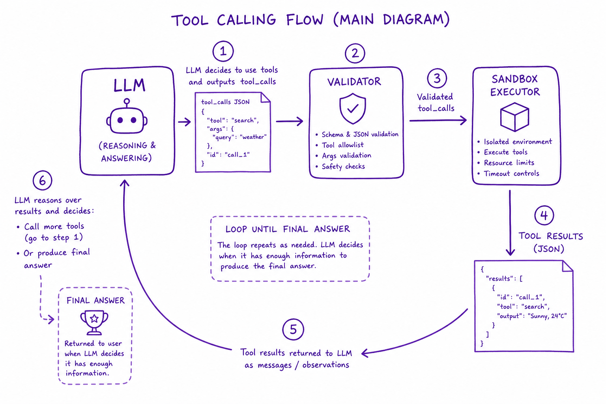
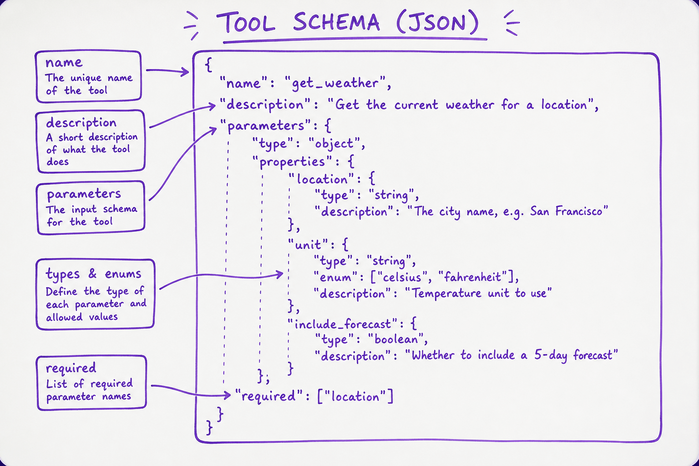
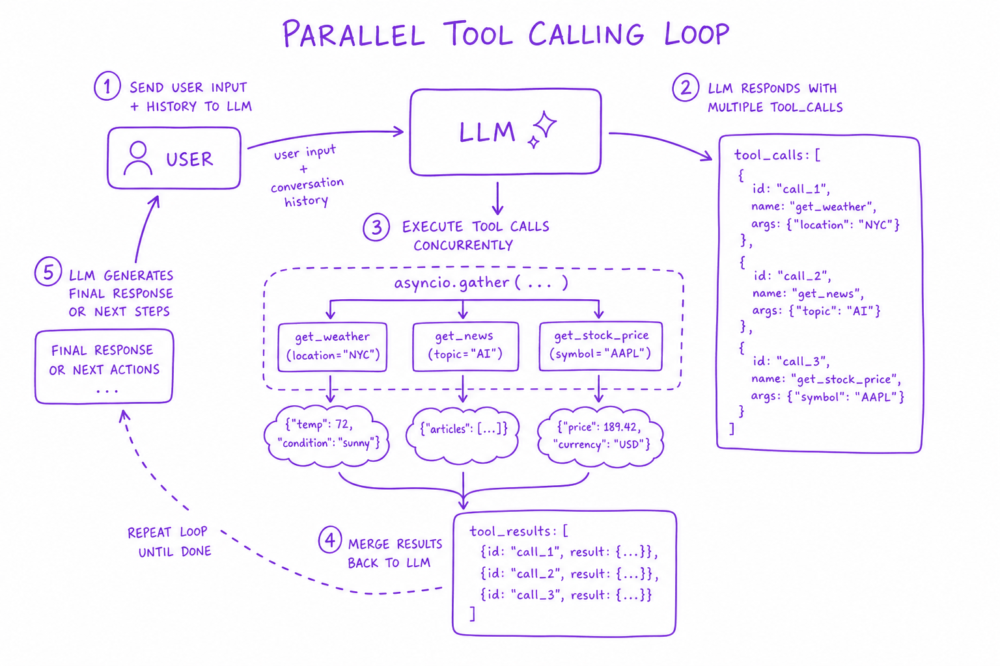

Tool Calling & Functions // Systems
LLM function calling: JSON schema design, tool registry, execution sandbox, parallel calls, error recovery. The bridge between reasoning and the real world.

Tool calling loop: LLM receives tool schemas, emits tool_calls JSON, executor runs in sandbox, results appended to messages, loop until final answer.
01 — What & Why
Tools let LLMs query databases, call APIs, run code. Schema is the contract; executor is the trust boundary.
01a — Core Concepts
| Term | Definition | Gotcha |
|---|---|---|
| Tool schema | JSON Schema describing params | Vague descriptions = bad args |
| tool_calls | LLM output requesting function execution | Validate before execute |
| tool_choice | auto | required | none | required forces tool even when unnecessary |
01b — API Surface
tools=[{"type":"function","function":{
"name":"search_docs",
"description":"Search internal KB",
"parameters":{"type":"object","properties":{
"query":{"type":"string","description":"Search query"}
},"required":["query"]}
}}]
response = client.chat.completions.create(model="gpt-4o", messages=msgs, tools=tools)02 — When to Use / When NOT
| Approach | Use When | Skip When |
|---|---|---|
| Function calling | Structured API/DB access | Answer in context already |
| Code interpreter | Data analysis, plotting | Untrusted user input without sandbox |
03 — Architecture
LLM -> tool_calls[] -> Validator -> Executor (sandbox) -> tool results -> LLM loop
04 — Deep Dive: Schema Design

JSON schema fields: name, description, parameters with types and enums
Descriptions are prompts. Use enums for finite choices. Required fields only. Example values in description.
05 — Deep Dive: Tool Registry
Central registry maps name → handler + schema + ACL. Dynamic registration per tenant. Max 20 tools per call — prune by relevance classifier.
06 — Deep Dive: Execution Sandbox
Network egress allowlist. Read-only DB creds. Timeout 30s. No filesystem write except /tmp. Firecracker/gVisor for code execution.
07 — Deep Dive: Error Handling
Return structured errors to LLM: {error, retry_hint}. Max 3 retries per tool. Circuit breaker on downstream failures.
08 — Deep Dive: Parallel Tools

LLM emits parallel tool_calls; executor runs concurrently; results merged
OpenAI parallel tool_calls. asyncio.gather for independent searches. Sequential when tool B needs tool A output.
09 — Production & Ops
- Log every tool call: name, args, latency, success
- PII scrubbing on args before log
- Rate limit per tool per user
10 — Where It Shows Up
11 — Common Pitfalls
- 20+ tools confuses model — use retrieval over tools
- Executing unvalidated args (SQL injection)
- No timeout on tool execution
- Returning huge raw JSON to context
12 — Interview Q&A
How design a good tool schema?
tool_choice auto vs required?
How prevent SQL injection from tool args?
Parallel vs sequential tool calls?
What return on tool failure?
How limit tool count?
Sandbox requirements for code exec?
Anthropic vs OpenAI tool format?
How test tools?
Idempotent tools?
Tool result size limits?
SDE3: tool platform for 200 internal APIs?
Go deeper
The long-form chapters and course parts that cover this topic in full, with worked examples and exercises.